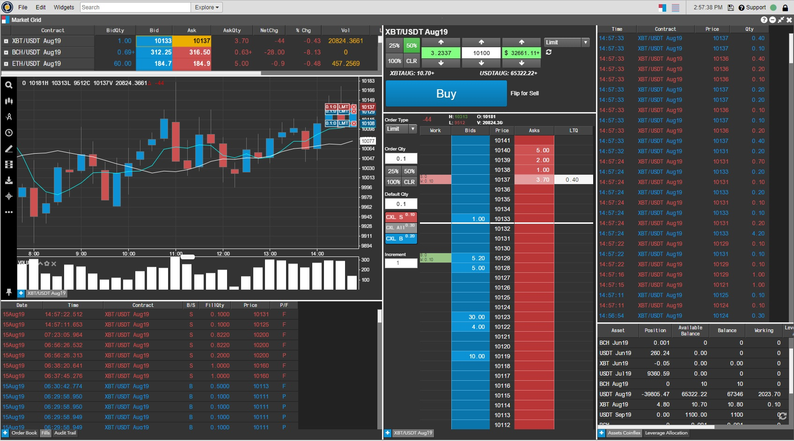
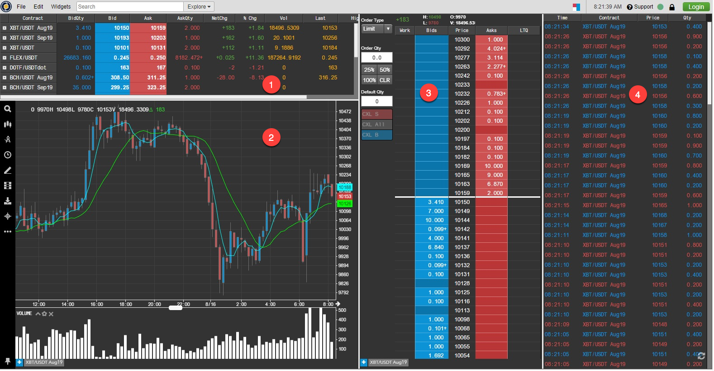
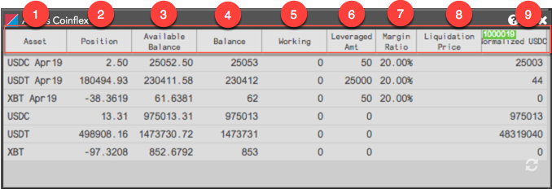
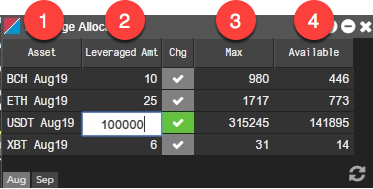
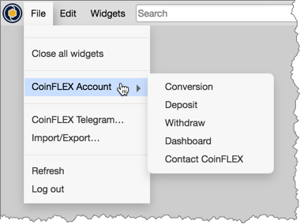
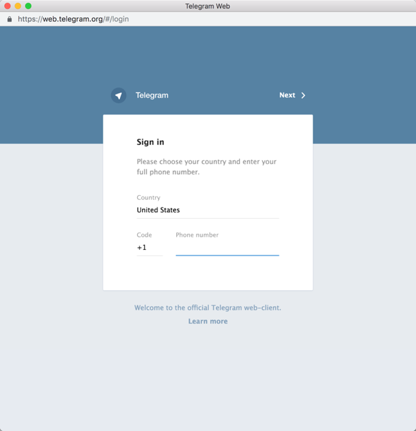

The CoinFLEX by TT trading platform provides you with access solely to the CoinFLEX exchange, which offers physically delivered futures for Bitcoin, Bitcoin Cash and Ethereum against Tether, as well as the stablecoin-to-stablecoin futures contract for Tether (USDT) against Circle’s USD Coin stablecoin (USDC).
When trading on CoinFLEX by TT, you have access to many of the professional trading tools currently available
on the TT® platform.

Getting Started
To begin trading on CoinFLEX by TT:
- Log in to coinflex.com to create an account.
- Fund your CoinFLEX account on coinflex.com, convert assets into any futures tenors that you want to trade, and take out any leverage that you want to trade with.
- Click Start Trading from the CoinFLEX landing page.
When you click "Start Trading" on the CoinFLEX home page while you are logged in to your CoinFLEX account, you will be logged in to CoinFLEX by TT
and can begin trading. Otherwise, click Exchange at the top of the landing page to see a preview TT workspace and view market data.
CoinFLEX by TT preview workspace
If you have not opened an account on CoinFLEX but want to view market data on CoinFLEX by TT, you can click "Start Trading" to open the preview workspace:

The workspace contains the following widgets:
- Market Grid — Displays market data for multiple
instruments in a grid and gives you the ability to trade those instruments.
- MD Trader —
Shows market depth for a single instrument in the industry-standard market depth display.
- Chart — Provides charting and analytics by combining historical time series data with continuous real-time market data updates.
- Time and Sales — Displays your trade history in the CoinFLEX marketplace.
CoinFLEX by TT trading workspace
When you log in to CoinFLEX by TT and open the "trading" screen, you'll see the following default workspace.

The workspace contains the following widgets:
- Market Grid — Displays market data for multiple
instruments in a grid and gives you the ability to trade those instruments.
- Order Ticket — Gives you the ability to submit Limit, Market, and advanced order types like OCO and Bracket orders in your CoinFLEX account.
- Chart — Provides charting and analytics by combining historical time series data with continuous real-time market data updates.
- MD Trader —
Shows market depth for a single instrument in the industry-standard market depth display and gives you the ability to
quickly and safely trade with a single click.
- Fills — Displays all of your fills from the current trading session as well as from previous trading sessions.
- Assets — Shows the balances for each spot or futures asset in your CoinFLEX account. Leverage — Shows the collateral leveraged for each futures asset in your CoinFLEX account, and gives you the ability to send commands to take or pay back trading leverage on CoinFLEX.
- Time and Sales — Displays your trade history in the CoinFLEX marketplace.
Note: To turn off order entry confirmations, click Edit | Preferences in the workspace menu bar, and uncheck the "Submission of orders" checkbox in the Confirm section on the Orders tab.
Market data and order entry on CoinFLEX by TT
For details about how market data is displayed for CoinFLEX assets, refer to Viewing market data on CoinFLEX by TT
.
For details about submitting orders, refer to Submitting orders on CoinFLEX by TT.
Note: CoinFlex by TT does not support orders and fills from external sources, which includes the CoinFlex GUI and mobile app, API users, and the TT production environment (trade.tt).
CoinFLEX by TT Assets widget
You can view your CoinFLEX account balances directly in CoinFLEX by TT
using the Assets widget. As you fund your wallet and open positions in each tradable futures asset, the changes in each of your CoinFLEX account balances are displayed in the Assets widget on CoinFLEX by TT.
The widget refreshes your balances automatically every 60 seconds, anytime you submit an order or receive a fill, or when you click the refresh icon to update your balances in the widget.

The widget shows the following columns:
- Asset — The spot or futures asset name.
- Position — The long or short position in a spot or futures asset.
- Available Balance — Displays the balance of an asset available to trade (i.e., Total Balance - Working Quantity for spot assets, or Total Balance - Working Quantity of each asset in that tenor for futures assets).
- Balance — The total balance of a spot or futures asset in your exchange account.
- Working — The quantity of your balance still working in the market as open orders.
- Leverage Funding — The amount of leverage borrowed for a futures asset.
- Margin Ratio — The percentage of collateral remaining in your leveraged futures asset balance per tenor. Displays only when one position is held per tenor. On mouse hover, the tooltip shows the exchange minimum percentage required to trade the asset.
- Liquidation Price — The Buy or Sell price of a futures asset at which the margin ratio will go below the exchange minimum for trading the asset. This field is blank if you have leveraged assets for more than one tenor.
- Normalized USDC — The amount of collateral normalized in USDC for a spot or futures asset. The total amount of assets available in USDC is displayed at the top of the column.
CoinFLEX by TT
Leverage widget
Your futures assets and buying or selling power available in your CoinFLEX account for each asset is displayed in the Leverage widget in CoinFLEX by TT. As you convert assets to futures collateral, borrow against this collateral, and perform trades in your futures assets, the changes in leverage data for each futures asset are displayed in the Leverage widget.
The widget refreshes your balances automatically every 60 seconds, anytime you submit an order or receive a fill, or when you click the refresh icon to update your balances in the widget.

The following columns are displayed:
- Asset — The name of the spot or futures asset available in your account.
- Leveraged Amt — The amount of collateral leveraged in a futures asset.
- Max — The maximum amount of buying or selling power in all futures assets per tenor.
- Available — The total amount of leverage in each individual futures asset in that tenor.
To borrow or pay back leverage in an asset using the widget, do the following:
- Double-click the cell in the Leveraged Amt column for the asset and enter the new leverage amount.
- Click the highlighted checkmark button in the Chg column to accept the change.
The Max and Available columns are updated for each asset per tenor based on the new
leverage amount.
CoinFLEX by TT
workspace menu bar options
From the File menu you can access your CoinFLEX account and open the CoinFLEX Telegram chat box in your default web browser.
CoinFLEX Account
Click File | CoinFLEX Account to access the following pages associated with your account on the CoinFLEX website.

The menu contains the following:
- Conversion — Allows you to convert your assets from spot to futures assets or futures to spot.
- Deposit — Used for funding your account.
- Withdrawal — Used for withdrawing assets from your account.
- Dashboard — Shows the MY ACCOUNT page used for managing your account on the CoinFLEX website.
- Contact CoinFLEX — Displays the contact information for CoinFLEX.
CoinFLEX Chat Box
Click File | CoinFLEX Telegram to open a the CoinFLEX telegram channel in a separate browser window.
